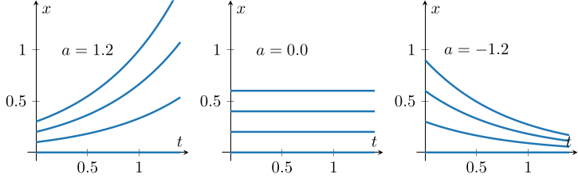
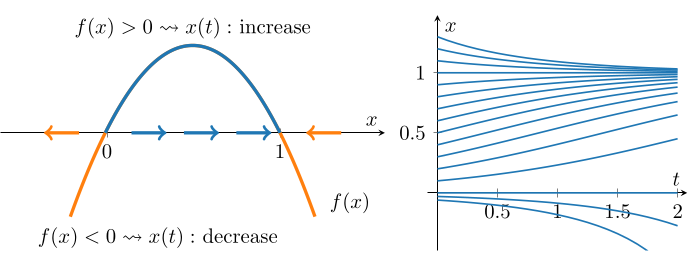
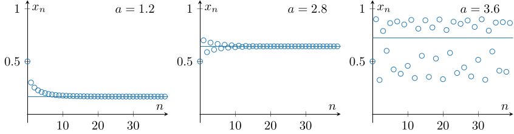
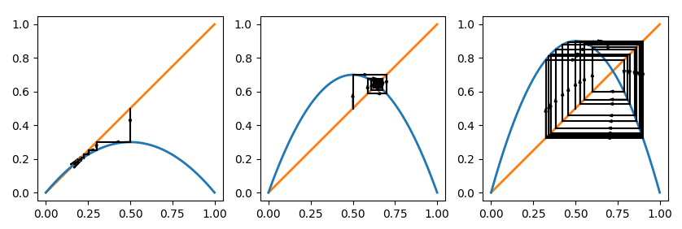
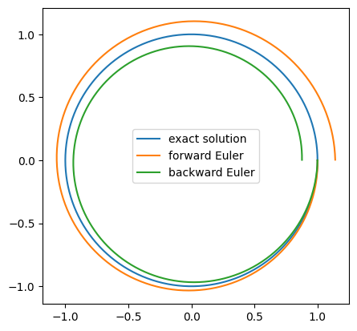

1. 力学系の概要と数値計算
まずは連続力学系と離散力学系それぞれについて, 簡単な例を通じて解の挙動を観察してみよう. また, 連続力学系に対する数値計算手法をいくつか紹介し, 後に複雑な連続力学系に対する数値計算を行うための準備を行う.
1.1: 一次元力学系
ここでは力学系の抽象的な定義を述べ, 簡単な具体例として 一次元力学系 をいくつか確認してみよう. はじめに において, 常微分方程式によって与えられる連続力学系と, 写像の反復によって与えられる離散力学系を紹介した. これらは『時間経過による状態の変化を表す写像の族』という共通の構造を持つ.
$X$ を相空間とする.
- 時間発展写像 $\Phi_t: X\to X$ について, \[ \Phi(t,\mathbf{x}) = \Phi_t(\mathbf{x}) \] により定まる写像 $\Phi:\mathbb{R}\times X\to X$ が連続であり, また $\Phi_t$ たちが \[ \left\{\begin{array}{rl} \Phi_0 &= \operatorname{id}_X, \cr \Phi_{t+s} &= \Phi_t\circ\Phi_s \end{array}\right. \] を満たすとき, $\{\Phi_t\}_{t\in\mathbb{R}}$ を フロー といい, これが定める時間発展を 連続力学系 という.
- 写像 $F: X\to X$ に対し, $\{F^n\}_{n\in\mathbb{N}}$ が定める時間発展を 離散力学系 という.
ただし, 写像 $F: X\to X$ に対し \[ F^n = \underbrace{F\circ F\circ \dots \circ F}_{\text{$n$ 個}} \] であり, 従って $F^{n + m} = F^n\circ F^m$ である. もし $F$ が可逆であれば、$F^{-1}$ を用いて $F^n$ を $n\in\mathbb Z$ に拡張できる. この場合, 離散力学系を定める $\{F^n\}_{n\in\mathbb{Z}}$ は, 連続力学系のフローとより完全に対応する.
上では連続力学系と離散力学系を時間発展写像の観点から定義している. この定義に基づき, 例えば常微分方程式 (系), 偏微分方程式 (系) 以外にも, 遅延微分方程式 や evolution inclusion など, 様々な形で記述されるシステムを力学系と解釈できる. 本資料では, しばらくは連続力学系として, 時間大域的な解が一意に存在する 常微分方程式系 \[ \left\{\begin{array}{rl} \mathbf{x}' &= \mathbf{f}(\mathbf{x}) \cr \mathbf{x}(0) &= \mathbf{x}_0 \end{array}\right. \] によって生成される自励系のみを扱うことにする.
簡単な例として, \[ \left\{\begin{array}{rl} x' &= ax \cr x(0) &= x_0\in\mathbb{R} \end{array}\right. \] を考える, ただし $a\in\mathbb{R}$ は定数とする. これは時間大域的なただ一つの解 $x(t) = e^{at}x_0$ を持つため, \[ \Phi_t(x_0) = e^{at}x_0 \] により定められる時間発展写像 $\Phi_t: \mathbb{R}\to \mathbb{R}$ の族は確かにフローとなる.
なお, 相空間が $\mathbb{R}$ である力学系は 一次元力学系 と呼ばれる.
連続力学系の解は時間経過により相空間上を動く点とみなせるため, アニメーションとして表示することも可能である. とはいえ, 一次元の場合は横軸を時刻 $t$ として解 $x(t)$ のグラフをプロットするのが分かりやすいだろう. 上の例について, いくつかのパラメータ $a\in\mathbb{R}$ に対する, いくつかの初期値に対する解のプロットを掲載する.

この例では, パラメータ $a$ によって解の挙動が大きく異なっている. このように, パラメータの変化に伴って力学系の定性的な性質が変化する現象を 分岐 (bifurcation) という. 分岐については後に改めて説明する.
次に, 一次元離散力学系の簡単な例として \[ x_{n+1} = ax_n \] を考える, ただし $a\neq 0$ は定数とする. ここで, $F(x) = ax$ により写像 $F: \mathbb{R}\to\mathbb{R}$ を定めると, 上は確かに $\{F^n\}_{n\in\mathbb{Z}}$ が定める離散力学系である. 実際, $x_n = F^n(x_0) = a^n x_0$ であることは簡単にわかる.
上で挙げた連続力学系と離散力学系は, 右辺が同様の形をしているものの解の挙動は大きく異なる (例えば $a\lt 0$ の場合などが分かりやすい). 連続力学系を一定の時間間隔ごとに取り出して離散力学系が得られるという関係性はフローに対するものであって, 方程式の形の類似性とは別の話である.
右辺が非線形になる常微分方程式の例として, ロジスティック方程式 \[ \left\{\begin{array}{rl} x' &= ax(1-x) \cr x(0) &= x_0 \end{array}\right. \] を考えてみよう, ただしここでは簡単のため $a\gt 0$ とする. まず, $x_0 = 0, 1$ の場合は明らかに $x(t) \equiv 0, 1$ である. 次に, $x_0\neq 0, 1$ の場合は, 変数分離により形式的に \[ \int \dfrac{1}{ax(1-x)}~dx = \int~dt \] となり, 両辺をそれぞれ計算することで \[ \begin{array}{rl} t + C &= -\dfrac{1}{a}\displaystyle\int\left(\dfrac{1}{x-1} - \dfrac{1}{x}\right)~dx \cr &= -\dfrac{1}{a} \log\left|1-\dfrac{1}{x}\right| \end{array} \] が得られる. 初期条件より積分定数 $C$ の任意性を排除できて \[ t - \dfrac{1}{a}\log\left|1-\dfrac{1}{x_0}\right| = -\dfrac{1}{a}\log\left|1-\dfrac{1}{x}\right| \] となるため, 整理して \[ x(t) = \dfrac{1}{1-(1-1/x_0)e^{-at}}\qquad (x_0 \neq 0, 1) \] と解を得ることもできる (なお, $x_0\lt 0$ の場合は \[ e^{-aT} = \dfrac{1}{1-1/x_0} \] を満たす時刻 $T$ で解が爆発するため, 解を $t\to\infty$ まで延長できない).
一般には解を明示的に求めること無く, 与えられた初期値に対する解の挙動を調べたい. 例えばこの問題に対しては, $x' = f(x)$ の右辺 \[ f(x) = ax(1-x) \] の符号が正となる $x(t)$ に対し $x'\gt 0$ が成立することに注目すると, $t$ の増加に伴い $x(t)$ は増加することがわかる. 逆に $f(x)$ の符号が負ならば $x(t)$ は減少する.
例として $a=1$ の場合を考えると, $x(t)$ に対する $f(x)$ の符号は下図左のようになっているため, 数直線上の点 $x(t)$ の時間経過により図中の矢印の向きに動くと説明できる. 実際に, ($a=1$ のときに) いくつかの初期値に対して, 手計算で求めた解をプロットしたものが下図右であり, 確かに左図の矢印により, $x(t)$ の時間経過による増減が説明できている.

例えば初期値が $x_0\gt 0$ を満たすならば, ロジスティック方程式の解 $x(t)$ は \[ \lim_{t\to\infty}x(t) = 1 \] を満たす, という程度であれば (解を明示的に求めること無く) 左の図の矢印の向きだけから読み取ることができる. このような考え方は, 力学系の解の挙動を調べる際に重要なものである.
ここでは ロジスティック写像 \[ x_{n+1} = ax_n(1-x_n) \] を考える, ただし簡単のために $0\lt a\lt 4$ とし, また初期値は $0\lt x_0\lt 1$ であるとする. この解 $x_n$ に対して $n\to\infty$ としたときの挙動は, 以下のように説明することができる:
- $0\lt a\lt 1$ のとき, 帰納的に任意の $n=0, 1, \dots$ に対し \[ 0\lt x_{n+1} = ax_n(1-x_n) \lt ax_n \lt x_n \lt 1 \] であることが示される. 点列 $\{x_n\}$ は単調に減少し, 特に $0\lt x_n \lt a^n x_0$ であることから, 挟み撃ちの原理より \[ \lim_{n\to\infty}x_n = 0 \] となる.
- $1\lt a$ のとき, $0\lt 1-a^{-1}\lt 1$ であることに注意すれば,
- $0\lt x_n \lt 1-a^{-1}$ ならば \[ x_{n+1} \gt ax_n(1-(1-a^{-1})) = x_n \] となる.
- $1-a^{-1}\lt x_n\lt 1$ ならば同様にして $x_{n+1} \lt x_n$ となることがわかる.
- $a$ の値や初期値によっては, 点列 $\{x_n\}$ が $1-a^{-1}$ の前後を往復する挙動が現れることもある.
- 実は $1\lt a\lt 3$ のときは $x_n\to 1-a^{-1}$ となるのだが, $a\gt 3$ のときは点列 $\{x_n\}$ は収束しなくなってしまう.
以下に, いくつかの $a$ に対するロジスティック写像の計算の様子を図示したものを掲載する. それぞれ, 横軸が $n$, 縦軸が $x_n$ の値を表しており, 上で説明したような挙動を観察できる.

さて, 上では一次元連続力学系の解のプロットと同様のアイデアに基づき一次元離散力学系の解をプロットしたが, 実際には グラフ反復法 もしくは クモの巣図法 と呼ばれる方法で一次元離散力学系の解の挙動を説明することが多い:
一次元離散力学系 $x_{n+1} = f(x_n)$ に対し, 横軸を $x_n$, 縦軸を $x_{n+1}$ として $x_{n+1} = f(x_n)$ のグラフと $x_{n+1} = x_n$ のグラフをプロットする. このとき:
- 与えられた $x_n$ に対し, $x_n$ を表す点 $(x_n, x_n)$ から垂直に引いた線と $x_{n+1} = f(x_n)$ のプロットとの交点は $(x_n, f(x_n))$, つまり $(x_n, x_{n+1})$ である.
- 得られた交点 $(x_n, x_{n+1})$ から水平に引いた線と $x_{n+1} = x_n$ のプロットとの交点は $(x_{n+1}, x_{n+1})$ である. この点が $x_{n+1}$ を表す.
この手順を $n=0$ から繰り返すことで, 一次元離散力学系の解の挙動を表す方法を グラフ反復法 (もしくは クモの巣図法) という. なお, 英語ではこの手順で得られる図を cobweb plot と呼ぶことがある.
実際に, $a = 1.2, 2.8, 3.6$ のときにロジスティック写像の解の挙動をグラフ反復法により表現した図を下に掲載する. 青い線は $x_{n+1}=f(x_n)$, オレンジの線は $x_{n+1} = x_n$ を表しており, 黒い線がグラフ反復法の手順の中で得られる垂直な線および水平な線である. 青とオレンジの線の交点は $x=1-a^{-1}$ を表しており, 左 ($a=1.2$) と中央 ($a=2.8$) は確かに $x_n\to 1-a^{-1}$ となる様子を表している. 一方で, 右 ($a=3.6$) は黒い線が交点の周辺を回り続けており, 点列 $\{x_n\}$ が収束しない様子を確認できる.

離散力学系は比較的容易に (例えば一次元であっても) 複雑な解の挙動を表現できるという特徴がある. また, 連続力学系の解を特定の時刻ごとに取り出すことで, 連続力学系の解の挙動を離散力学系に対応付けて調べることができる (このアイデアは後に ポアンカレ写像 として改めて紹介する). この資料では主に常微分方程式系を対象に議論を進めることにするが, その場合でも対応する離散力学系を考えることは, しばしば重要なテクニックとなる.
1.2: 時間離散化
常微分方程式により与えられる連続力学系を離散力学系と対応付ける方法の一つとして, 先ほどはポアンカレ写像について名前だけ言及した. ここでは異なる方法として 時間離散化, 特に オイラー法 と ルンゲ=クッタ法 による時間離散化について解説しよう.
常微分方程式系 \[ \left\{\begin{array}{rl} \mathbf{x}' &= \mathbf{f}(\mathbf{x}), \cr \mathbf{x}(0) &= \mathbf{x}_0 \end{array}\right. \] に対して, 連続的な時刻 $t$ における解 $\mathbf{x}(t)$ の代わりに, 時間刻み $\tau\gt 0$ を用いて \[ t_n = n\tau \qquad (n=0, 1, \dots) \] と表される 離散的 な時刻における解 $\mathbf{x}(t_n)$ の近似 $\mathbf{x}_n$ を求めたい. その際には, 時間変数 $t$ に関する微分 \[ \mathbf{x}'(t_n) = \lim_{h\to 0}\dfrac{\mathbf{x}(t_n+h) - \mathbf{x}(t_n)}{h} \] を $\{\mathbf{x}_n\}$ を用いた式で近似することで, 常微分方程式系に対する近似問題を導出することになる. このようにして近似問題を導出し, 近似解を定める操作を 時間離散化 と呼ぶ.
例えば (微分における $h\to 0$ を $\tau\gt 0$ に取り替えて) \[ \mathbf{x}'(t_n) \approx \dfrac{\mathbf{x}(t_{n+1}) - \mathbf{x}(t_n)}{\tau} \approx \dfrac{\mathbf{x}_{n+1} - \mathbf{x}_n}{\tau} \] という近似を用いてみよう (右の式は 差分商 と呼ばれる). すると常微分方程式に対して \[ \dfrac{\mathbf{x}_{n+1} - \mathbf{x}_n}{\tau} = \mathbf{f}(\mathbf{x}_n) \] という近似問題を導出することができるが, これは 前進オイラー法 (forward Euler method) もしくは 陽的オイラー法 (explicit Euler method) と呼ばれる. 一方で (微分における $h\to 0$ を $-\tau\lt 0$ に取り替えて) \[ \mathbf{x}'(t_n) \approx \dfrac{\mathbf{x}(t_n) - \mathbf{x}(t_{n-1})}{\tau} \approx \dfrac{\mathbf{x}_{n} - \mathbf{x}_{n-1}}{\tau} \] という近似を用いて (添え字を一つずらして) \[ \dfrac{\mathbf{x}_{n+1} - \mathbf{x}_n}{\tau} = \mathbf{f}(\mathbf{x}_{n+1}) \] という近似問題を導出することもできるが, これは 後退オイラー法 (backward Euler method) もしくは 隠的オイラー法 (implicit Euler method) と呼ばれる.
ここまでを定義として整理しておこう:
常微分方程式系 \[ \left\{\begin{array}{rl} \mathbf{x}' &= \mathbf{f}(\mathbf{x}), \cr \mathbf{x}(0) &= \mathbf{x}_0 \end{array}\right. \] を考える. また, 時間刻み幅を $\tau\gt 0$ とし, $t_n = n\tau$ とする.
- 近似解 $\mathbf{x}_n \approx \mathbf{x}(t_n)$ を \[ \dfrac{\mathbf{x}_{n+1} - \mathbf{x}_n}{\tau} = \mathbf{f}(\mathbf{x}_n) \] により定める時間離散化を 前進オイラー法 (forward Euler method) もしくは 陽的オイラー法 (explicit Euler method) という.
- 近似解 $\mathbf{x}_n \approx \mathbf{x}(t_n)$ を \[ \dfrac{\mathbf{x}_{n+1} - \mathbf{x}_n}{\tau} = \mathbf{f}(\mathbf{x}_{n+1}) \] により定める時間離散化を 後退オイラー法 (backward Euler method) もしくは 隠的オイラー法 (implicit Euler method) という.
ロジスティック方程式 \[ \left\{\begin{array}{rl} x' &= ax(1-x) \cr x(0) &= x_0 \end{array}\right. \] に対し, オイラー法による時間離散化を考える. 時間刻み幅を $\tau\gt 0$ としたとき, 前進オイラー法, 後退オイラー法はそれぞれ \[ \dfrac{x_{n+1} - x_n}{\tau} = ax_n(1-x_n),\qquad \dfrac{x_{n+1} - x_n}{\tau} = ax_{n+1}(1-x_{n+1}) \] となる. 前進オイラー法は \[ x_{n+1} = x_n + a\tau x_n(1-x_n) \] と式変形することで, 与えられた $x_n$ から $x_{n+1}$ を容易に計算できるが, 後退オイラー法では $x_{n+1}$ を求めるために $2$ 次方程式を解く必要がある.
一般に, 自励系 $\mathbf{x}' = \mathbf{f}(\mathbf{x})$ に対する前進オイラー法では, 与えられた $\mathbf{x}_n$ から $\mathbf{x}_{n+1}$ を求める際に \[ \mathbf{x}_{n+1} = \mathbf{x}_n + \tau\mathbf{f}(\mathbf{x}_n) \] と 陽的 に計算可能である (例えば方程式を解いたりする必要がない). 前進オイラー法が陽的オイラー法とも呼ばれるのはこのためである. また, \[ F(\mathbf{x}_n) = \mathbf{x}_n + \tau\mathbf{f}(\mathbf{x}_n) \] とおくと, 前進オイラー法は $\mathbf{x}_{n+1} = F(\mathbf{x}_n)$ という離散力学系であると思うことができる.
後退オイラー法では, $\mathbf{x}_{n+1}$ を求めるために方程式を解くなど 隠的 な計算が必要があり手間である. 一方, 多くの場合に後退オイラー法は前進オイラー法よりも『良い』近似解を与えることが知られている. なお, 与えられた $\mathbf{x}_n$ に対し $\mathbf{x}_{n+1}$ を対応させる写像を構成すれば, やはり後退オイラー法も $\mathbf{x}_{n+1} = F(\mathbf{x}_n)$ という離散力学系であると思うことができる.
実際には, 時間離散化により得られた近似問題を離散力学系であるとみなす解釈は一般的なものとは言い難い. とはいえ, 離散力学系に関する議論を用いて, 時間離散化の性質を説明することができるため, 興味深い視点である.
ここでは, ロジスティック方程式 \[ \left\{\begin{array}{rl} x' &= ax(1-x) \cr x(0) &= x_0 \end{array}\right. \] の解 \[ x(t) = \dfrac{1}{1-(1-1/x_0)e^{-at}}\qquad (x_0 \neq 0, 1) \] と, オイラー法により得られる近似解とを比較してみよう. ただし, ここでは $a=1$ とし, また初期値は $x_0 = 0.1$ を用いることにする. さらに, オイラー法において時間刻み幅は $\tau=0.1$ とする.
1.2: 線形力学系と行列指数関数
力学系の様々な概念について紹介する前に, ここでは $2$ 次元以上の連続力学系の例として, 線形力学系について紹介しよう.
変数 $t$, 未知のベクトル値関数 $\mathbf{x}(t)\in\mathbb{R}^d$, 与えられた 線形写像 $\mathbf{f}: \mathbb{R}^{d}\to\mathbb{R}^d$ に対して, \[ \mathbf{x}' = \mathbf{f}(\mathbf{x}) \] と表される連続力学系 (特に自励系である) を 線形力学系 (linear dynamical system) という.
常微分方程式系 \[ \left\{\begin{array}{rl} x' &= x + 2y \cr y' &= 3x + 4y \end{array}\right. \] を考える. いま, \[ \mathbf{x} = \begin{pmatrix} x \cr y \end{pmatrix}, \quad A = \begin{pmatrix} 1 & 2 \cr 3 & 4 \end{pmatrix} \] とすると, $\mathbf{x}' = A\mathbf{x}$ となっているため, これは線形力学系である.
直観的には, $x$ や $y$ の一次の項のみが現れる力学系は線形力学系であると説明できる.
線形力学系の解についての性質を確認しておこう:
- $\mathbf{x}(t) = \mathbf{0}$ は解となる.
- 行列 $A$ の固有値 $\lambda_i$ および対応する固有ベクトル $\mathbf{v}_i$ に対して, \[ \mathbf{x}(t) = e^{\lambda_i t}\mathbf{v}_i \] は解となる.
- $\mathbf{x}_1(t)$, $\mathbf{x}_2(t)$ が解ならば, それらの線型結合で与えられる関数 \[ \mathbf{x}(t) = c_1\mathbf{x}_1(t) + c_2\mathbf{x}_2(t) \] も解となる.
- $\mathbf{x}(t) = \mathbf{0}$ が $\mathbf{x}' = A\mathbf{x}$ を満たすことは明らかである.
- $A\mathbf{v}_i = \lambda_i\mathbf{v}_i$ より, $\mathbf{x}(t) = e^{\lambda_i t}\mathbf{v}_i$ は \[ \mathbf{x}' = \lambda_ie^{\lambda_i t}\mathbf{v}_i = e^{\lambda_i t}A\mathbf{v}_i = A \mathbf{x} \] を満たす.
- $\mathbf{x}_1' = A\mathbf{x}_1$ かつ $\mathbf{x}_2' = A\mathbf{x}_2$ であるとき, $\mathbf{x}(t) = c_1\mathbf{x}_1(t) + c_2\mathbf{x}_2(t)$ は \[ \begin{array}{rl} \mathbf{x}' &= (c_1\mathbf{x}_1 + c_2\mathbf{x}_2)' \cr &= c_1\mathbf{x}_1' + c_2\mathbf{x}_2' \cr &= c_1A\mathbf{x}_1 + c_2A\mathbf{x}_2 \cr &= A(c_1\mathbf{x}_1 + c_2\mathbf{x}_2) = A\mathbf{x} \end{array} \] を満たす.
上の性質を用いると, 行列 $A$ の固有ベクトルが線型独立ならば, 与えられた任意の初期条件を固有ベクトルの線型結合で表すことで線形力学系 $(1)$ のただ一つの解が得られることになる. 従って, 一般解も線型結合の形で表すことができる.
常微分方程式系 \[ \left\{\begin{array}{rl} x' &= -6x - 4y \cr y' &= 8x + 6y \end{array}\right. \] の一般解を求めよ.
いま, \[ \mathbf{x} = \begin{pmatrix} x \cr y \end{pmatrix}, \quad A = \begin{pmatrix} -6 & -4 \cr 8 & 6 \end{pmatrix} \] とすると, $\mathbf{x}' = A\mathbf{x}$ である. 行列 $A$ の固有値は, 固有方程式 \[ 0 = \det (\lambda I-A) = (\lambda-2)(\lambda+2) \] の解 $\lambda_1=-2$, $\lambda_2 = 2$ であり, 対応する固有ベクトルは \[ \mathbf{0} = (\lambda_1 I-A)\mathbf{v}_1 = \begin{pmatrix} 4 & 4 \cr -8 & -8 \end{pmatrix}\mathbf{v}_1, \]\[ \mathbf{0} = (\lambda_2 I-A)\mathbf{v}_2 = \begin{pmatrix} 8 & 4 \cr -8 & -4 \end{pmatrix}\mathbf{v}_2, \] を満たす $\mathbf{0}$ でないベクトルであり, 例えば \[ \mathbf{v}_1 = \begin{pmatrix} 1 \cr -1 \end{pmatrix},\quad \mathbf{v}_2 = \begin{pmatrix} 1 \cr -2 \end{pmatrix} \] はそれぞれ対応する固有ベクトルである. 従って, \[ e^{\lambda_1 t}\mathbf{v}_1 = e^{-2 t}\begin{pmatrix} 1 \cr -1 \end{pmatrix},\quad e^{\lambda_2 t}\mathbf{v}_2 = e^{2t}\begin{pmatrix} 1 \cr -2 \end{pmatrix} \] はどちらも線形力学系 $\mathbf{x}' = A\mathbf{x}$ の解となり, $\mathbf{v}_1$ と $\mathbf{v}_2$ が線型独立であることから, 一般解はこれらの線形結合で表される: \[ \mathbf{x}(t) = c_1e^{-2 t}\begin{pmatrix} 1 \cr -1 \end{pmatrix} + c_2e^{2t}\begin{pmatrix} 1 \cr -2 \end{pmatrix} \]
さらに, 初期条件が与えられた際の特殊解については, 簡単な表記を与えることができる. ここでは, \[ \left\{\begin{array}{rl} \mathbf{x}' &= A\mathbf{x}, \cr \mathbf{x}(0) &= \mathbf{x}_0 \end{array}\right. \tag{2} \] を考えてみよう, ただし, $\mathbf{x}_0\in\mathbb{R}^d$ は初期値として与えられたベクトルである. このとき, 線形力学系 $(1.2)$ の解 $\mathbf{x}: \mathbb{R}\to\mathbb{R}^d$ は \[ \mathbf{x}(t) = e^{tA}\mathbf{x}_0 \] と表すことができる (これは, \[ \left\{\begin{array}{rl} x' &= ax, \cr x(0) &= x_0 \end{array}\right. \] の解が $x(t) = e^{at}x_0$ であることと自然に対応している). ここで, $e^{tA}$ は 行列指数関数 であり, 具体的には以下で定義される:
正方行列 $A$ に対し, \[ e^{A} = \sum_{k=0}^\infty \dfrac{A^k}{k!} = I + A + \dfrac{A^2}{2} + \dfrac{A^3}{3!} + \dots \] を 行列指数関数 という.
- 上の定義より, \[ e^{tA} = \sum_{k=0}^\infty \dfrac{(tA)^k}{k!} = I + tA + \dfrac{(tA)^2}{2} + \dfrac{(tA)^3}{3!} + \dots \] である. $e^{at}$ のテイラー展開 \[ e^{at} = \sum_{k=0}^{\infty}\dfrac{(at)^k}{k!} \] と比較すれば, 自然な定義であることがわかる
- なお, \[ \|e^{A}\| = \left\|\displaystyle\sum_{k=0}^\infty \dfrac{A^k}{k!}\right\| \le \displaystyle\sum_{k=0}^\infty \dfrac{\|A\|^k}{k!} = e^{\|A\|} \] であることから, 任意の $A\in\mathbb{R}^{d\times d}$ に対し $e^{A}\in\mathbb{R}^{d\times d}$ は well-defined である.
行列指数関数の性質をいくつかまとめておこう:
正方行列 $A$ に対し, 以下が成立する:
- $e^{O} = I,\quad e^{tI} = e^t I, \quad (e^{A})^{\operatorname{T}} = e^{A^{\operatorname{T}}} ,\quad e^{sA}e^{tA} = e^{(s+t)A}$.
- $\dfrac{d}{dt}e^{tA} = Ae^{tA} = e^{tA}A$.
- 行列 $A$ の固有値 $\lambda_i$ に対応する固有ベクトル $\mathbf{v}_i$ は, 行列 $e^{tA}$ の固有値 $e^{\lambda_i t}$ に対応する固有ベクトルになる.
- 証明略.
- $t$ を変数とする関数列 \[ f_{\ell}(t) = \sum_{k=0}^\ell \dfrac{(tA)^k}{k!} \] は $e^{tA}$ に広義一様収束する, 従って項別微分ができるため \[ \begin{array}{rl} \dfrac{d}{dt}e^{tA} &= \dfrac{d}{dt}\displaystyle\sum_{k=0}^{\infty}\dfrac{(tA)^k}{k!} \cr &= \displaystyle\sum_{k=1}^{\infty}\dfrac{t^{k-1}A^k}{(k-1)!} \cr &= Ae^{tA} = e^{tA}A \end{array} \] が得られる.
- 行列 $A$ の固有値 $\lambda_i$ および対応する固有ベクトル $\mathbf{v}_i$ に対して \[ A^k\mathbf{v}_i = A^{k-1}(A\mathbf{v}_i) = \lambda_iA^{k-1}\mathbf{v}_i = \dots = \lambda_i^{k}\mathbf{v}_i \] であることに注意すれば, \[ e^{tA}\mathbf{v}_i = \sum_{k=0}^\infty \dfrac{(tA)^k}{k!}\mathbf{v}_i = \sum_{k=0}^\infty \dfrac{(\lambda_i t)^k}{k!}\mathbf{v}_i = e^{\lambda_i t}\mathbf{v}_i \] が得られる.
上の性質を用いて, $\mathbf{x}(t) = e^{tA}\mathbf{x}_0$ が \[ \left\{\begin{array}{rl} \mathbf{x}' &= A\mathbf{x}, \cr \mathbf{x}(0) &= \mathbf{x}_0 \end{array}\right. \] を満たすことを確認せよ.
$\mathbf{x}(t) = e^{tA}\mathbf{x}_0$ ならば \[ \mathbf{x}' = \dfrac{d}{dt}e^{tA}\mathbf{x}_0 = Ae^{tA}\mathbf{x}_0 = A\mathbf{x} \] となり, また $\mathbf{x}(0) = e^O\mathbf{x}_0 = I\mathbf{x}_0 = \mathbf{x}_0$ である.
- 正方行列 $A\in\mathbb{R}^{d\times d}$ のジョルダン標準形 $J = P^{-1}AP\in\mathbb{C}^{d\times d}$ に対して, \[ e^{tA} = Pe^{tJ}P^{-1} \] である.
- ジョルダン標準形 $J$ を, $A$ の固有値 $\lambda_i$ に関するジョルダン細胞 \[ J_{m_{ij}}(\lambda_i) = \begin{pmatrix} \lambda_i & 1 & 0 & \dots & 0 \cr 0 & \lambda_i & 1 & \dots & 0 \cr \vdots & &\ddots && \vdots \cr 0 & \dots & & \lambda_i & 1 \cr 0 & \dots & & 0 & \lambda_i \end{pmatrix} \in \mathbb{C}^{m_{ij}\times m_{ij}} \] たちを対角成分にもつブロック行列対角として表したとき, 行列指数関数 $e^{tJ}$ は $e^{tJ_{m_{ij}}(\lambda_i)}$ たちを対角成分にもつブロック対角行列になる (固有値 $\lambda_i$ に対応するジョルダン細胞が複数存在するとき, それらを $J_{m_{i1}}(\lambda_i), J_{m_{i2}}(\lambda_i), \dots$ と表記している).
- $e^{tJ_{m_{ij}}(\lambda_i)}$ の全ての成分は $p_{m_{ij}}(t)e^{\lambda_i t}$ という形になる, ここで $p_{m_{ij}}(t)$ は $t$ について高々 $m_{ij}-1$ 次の多項式である.
- 行列 $A$ の全ての固有値の実部が負であるならば, ある定数 $a\gt 0$ が存在し $\|e^{tJ}\|\le Ce^{-at}$ が成立する. 従って $e^{tA}\to 0$ as $t\to\infty$ である.
- 行列指数関数の定義と, \[ A^k = P\underbrace{(P^{-1}AP)\dots(P^{-1}AP)}_{k\text{個}}P^{-1} = PJ^kP^{-1} \] であることから従う.
- ジョルダン標準形 $J$ が \[ J = \begin{pmatrix} J_{m_{11}}(\lambda_1) & \dots & 0 \cr \vdots & \ddots & \vdots \cr 0 & \dots & J_{m_{ij}}(\lambda_i) \end{pmatrix} \] というブロック対角行列であるとき, \[ J^k = \begin{pmatrix} J_{m_{11}}(\lambda_1)^k & \dots & 0 \cr \vdots & \ddots & \vdots \cr 0 & \dots & J_{m_{ij}}(\lambda_i)^k \end{pmatrix} \] であり, 従って \[ e^{tJ} = \sum_{k=0}^\infty\dfrac{(tJ)^k}{k!} = \begin{pmatrix} \displaystyle\sum_{k=0}^\infty\dfrac{(tJ_{m_{11}}(\lambda_1))^k}{k!} & \dots & 0 \cr \vdots & \ddots & \vdots \cr 0 & \dots & \displaystyle\sum_{k=0}^\infty\dfrac{(tJ_{m_{ij}}(\lambda_i))^k}{k!} \end{pmatrix} = \begin{pmatrix} e^{tJ_{m_{11}}(\lambda_1)} & \dots & 0 \cr \vdots & \ddots & \vdots \cr 0 & \dots & e^{tJ_{m_{ij}}(\lambda_i)} \end{pmatrix} \] である.
- いま, 行列 $U^r = (u^r_{ij})$ を, \[ u^r_{ij} = \left\{\begin{array}{rl} 1 & \text{if }j-i = r, \cr 0 & \text{otherwise} \end{array}\right. \] により定めると, \[ J_{m_{ij}}(\lambda_i) = \begin{pmatrix} \lambda_i & 1 & 0 & \dots & 0 \cr 0 & \lambda_i & 1 & \dots & 0 \cr \vdots & &\ddots && \vdots \cr 0 & \dots & & \lambda_i & 1 \cr 0 & \dots & & 0 & \lambda_i \end{pmatrix} = \begin{pmatrix} \lambda_i & 0 & 0 & \dots & 0 \cr 0 & \lambda_i & 0 & \dots & 0 \cr \vdots & &\ddots && \vdots \cr 0 & \dots & & \lambda_i & 0 \cr 0 & \dots & & 0 & \lambda_i \end{pmatrix} + \begin{pmatrix} 0 & 1 & 0 & \dots & 0 \cr 0 & 0 & 1 & \dots & 0 \cr \vdots & &\ddots && \vdots \cr 0 & \dots & & 0 & 1 \cr 0 & \dots & & 0 & 0 \end{pmatrix}= \lambda_i I + U^1 \] であり, また \[ (U^1)^\ell = \left\{\begin{array}{rl} U^\ell & \text{if }k\lt m_{ij}, \cr O & \text{if }k\ge m_{ij} \end{array}\right. \] である. これを用いて, \[ \begin{array}{rl} e^{tJ_{m_{ij}}(\lambda_i)} &= \displaystyle\sum_{k=0}^\infty \dfrac{(tJ_{m_{ij}}(\lambda_i))^k}{k!} \cr &= \displaystyle\sum_{k=0}^\infty \dfrac{t^k}{k!}(\lambda_i I + U^1)^k \cr &= \displaystyle\sum_{k=0}^\infty \dfrac{t^k}{k!}\sum_{\ell=0}^k {}_kC_{\ell}\lambda_i^{k-\ell} (U^1)^{\ell} \cr &= \displaystyle\sum_{k=0}^\infty \sum_{\ell=0}^{\max\{k, m_{ij}-1\}} \dfrac{t^\ell}{\ell!}\cdot\dfrac{(t\lambda_i)^{k-\ell}}{(k-\ell)!} U^{\ell} \cr &= \displaystyle\sum_{\ell=0}^{m_{ij}-1}\sum_{k=\ell}^{\infty} \dfrac{t^\ell}{\ell!}\cdot\dfrac{(t\lambda_i)^{k-\ell}}{(k-\ell)!} U^{\ell} \cr &= \displaystyle\sum_{\ell=0}^{m_{ij}-1}\dfrac{t^\ell}{\ell!}e^{t\lambda_i}U^{\ell} \cr &= \begin{pmatrix} e^{t\lambda_i} & te^{t\lambda_i} & \dots & \dfrac{t^{m_{ij}-1}}{(m_{ij-1})!}e^{t\lambda_i} \cr 0 & e^{t\lambda_i} & \ddots & \vdots \cr \vdots & & \ddots & te^{t\lambda_i} \cr 0 & 0 & \dots & e^{t\lambda_i} \end{pmatrix}. \end{array} \]
- いま, オイラーの公式 \[ e^{iz} = \cos z + i\sin z \quad\text{ for all }\quad z\in\mathbb{C} \] より $|e^{t\lambda_i}| = e^{t\operatorname{Re}\lambda_i}$ であることに注意すると, もしも $\lambda_i$ の実部が負ならば $e^{tJ_{m_ij}(\lambda_i)}$ の全ての成分の絶対値は適当な負の指数をもつ指数関数で上から抑えられる. 従って, 全ての固有値の実部が負であれば, $e^{tJ}$ の全ての成分の絶対値は適当な定数 $a\gt 0$ を用いて $Ce^{-at}$ で抑えられる. 行列ノルムの影響も定数に含めることで $\|e^{tJ}\|\le Ce^{-at}$ という評価が得られる.
特に, 最後の結果については以下の形で引用することがある:
- $\implies)$: 先ほど証明した.
- $\impliedby)$: $A$ の固有値を $\lambda_i$ とすると, 行列 $e^{tA}$ の固有値は $e^{\lambda_i t}$ であった. 従って, $e^{tA}\to0$ のとき, この行列の全ての固有値も $e^{t\lambda_i}\to 0$ となる. オイラーの公式より, これは全ての固有値 $\lambda_i$ に対し $\operatorname{Re}\lambda_i\lt 0$ であることを意味する.
さて, 線形力学系 $(1.2)$ の解が $\mathbf{x}(t) = e^{tA}\mathbf{x}_0$ と表されるのであった. これと上の結果を用いることで, 行列 $A$ の全ての固有値の実部が負であることと, 任意の初期値に対し線形力学系の解 $\mathbf{x}(t)$ が $\mathbf{0}$ に収束することとが同値となる. このことは, 後に 安定性 について紹介する際に改めて言及する.
1.3: 二次元線形力学系の分類
ここからは, 具体例として \[ A = \begin{pmatrix} a & b \cr c & d \end{pmatrix} \in\mathbb{R}^{2\times 2} \] を考え, 線形力学系 $(1)$ の一般解と $(2)$ の特殊解それぞれの表記を考えてみよう.
まず, 記号の簡単のために, \[ T = \operatorname{tr}A = a+d, \quad D = \det A = ad-bc \] と表すことにすると, 行列 $A$ の固有値は固有方程式 \[ 0 = \det(\lambda I-A) = \lambda^2 - T\lambda + D \] を解くことで得られる. ここで $2$ 次方程式の解の公式を用いると
- $T^2-4D\gt 0$ ならば, 異なる二つの固有値 $\lambda_1$, $\lambda_2\in\mathbb{R}$ が存在する,
- $T^2-4D = 0$ ならば, 固有値は重複した $1$ つの実数のみである,
- $T^2-4D\lt 0$ ならば, 虚部が $0$ でない異なる二つの固有値 $\lambda_1$, $\lambda_2\in \mathbb{C}$ が存在し, $\lambda_1 = \overline{\lambda_2}$ である.
上で挙げた $3$ つの状況について, 一つずつ考察していこう:
- 異なる二つの固有値 $\lambda_1$, $\lambda_2\in\mathbb{R}$ が存在する場合:
- このとき, 二つの固有値それぞれに対応する固有ベクトル $\mathbf{v}_1$, $\mathbf{v}_2\in\mathbb{R}^2$ が存在し, \[ \mathbf{x}(t) = e^{\lambda_1 t}\mathbf{v}_1,\quad e^{\lambda_2 t}\mathbf{v}_2 \] はどちらも $\mathbf{x}' = A\mathbf{x}$ を満たす. さらに, 異なる固有値に対応する固有ベクトルは線型独立であるため, これらを用いて, \[ \mathbf{x}(t) = c_1e^{\lambda_1 t}\mathbf{v}_1 + c_2e^{\lambda_2 t}\mathbf{v}_2 \] という線型結合で表される $\mathbf{x}(t)$ は $\mathbf{x}' = A\mathbf{x}$ の一般解である.
- あとは, 与えられた $\mathbf{x}_0\in\mathbb{R}^2$ に対して
\[
\mathbf{x}_0 = \mathbf{x}(0) = c_1\mathbf{v}_1 + c_2\mathbf{v}_2 = (\mathbf{v}_1,\mathbf{v}_2)\begin{pmatrix}
c_1 \cr
c_2
\end{pmatrix}
\] を満たす $c_1$, $c_2\in\mathbb{R}$ が得られれば, 式 $(2)$ の解 (初期条件が与えられた際の特殊解) が得られる.
- 具体的には, $\mathbf{v}_1$, $\mathbf{v}_2\in\mathbb{R}^2$ が線型独立であることから (つまり $\mathbf{v}_1, \mathbf{v}_2$ が $\mathbb{R}^2$ の基底であることから), \[ P = (\mathbf{v}_1, \mathbf{v}_2)\in\mathbb{R}^{2\times 2} \] は正則行列であり, 従って \[ \begin{pmatrix} c_1 \cr c_2 \end{pmatrix} = P^{-1}\mathbf{x}_0 \] を計算することで, 定数 $c_1$, $c_2$ が決定され特殊解が得られる.
- なお, このようにして得られる $c_1$, $c_2$ は $\mathbf{x}_0 = c_1\mathbf{v}_1 + c_2\mathbf{v}_2$ を満たすことに注意すると, $\mathbf{x} = e^{tA}\mathbf{x}_0$ に基づき \[ \mathbf{x}(t) = e^{tA}\mathbf{x}_0 = c_1e^{tA}\mathbf{v}_1 + c_2e^{tA}\mathbf{v}_2 = c_1e^{\lambda_1 t}\mathbf{v}_1 + c_2e^{\lambda_2 t}\mathbf{v}_2 \] と計算することもできる. いずれにしても, 一般解の表記において初期条件に応じて $c_1$, $c_2$ を決定したものが特殊解となることが確かめられる.
- さらに, このとき行列 $A$ を対角化すると
\[
P^{-1}AP = \begin{pmatrix}
\lambda_1 & 0 \cr
0 & \lambda_2
\end{pmatrix}
\] となるため, 式 $(1.1)$ の解 $\mathbf{x}$ に対して $\widehat{\mathbf{x}} = P^{-1}\mathbf{x}$ と定めると,
\[
\begin{array}{rl}
\begin{pmatrix}
\lambda_1 & 0 \cr
0 & \lambda_2
\end{pmatrix} \widehat{\mathbf{x}} &= P^{-1}AP\widehat{\mathbf{x}} \cr
&= P^{-1}A\mathbf{x} \cr
&= P^{-1}\mathbf{x}' = \widehat{\mathbf{x}}'
\end{array}
\] となる. このことは, 式 $(1.2)$ の解は
\[
\left\{\begin{array}{rl}
\widehat{\mathbf{x}}' &= \begin{pmatrix}
\lambda_1 & 0 \cr
0 & \lambda_2
\end{pmatrix}\widehat{\mathbf{x}}, \cr
\widehat{\mathbf{x}}(0) &= P^{-1}\mathbf{x}_0
\end{array}\right.
\] の解 $\widehat{\mathbf{x}}$ に対する線形変換 $\mathbf{x} = P\widehat{\mathbf{x}}$ により説明できることを意味している.
- 実際に, 上の一般解 $\widehat{\mathbf{x}}$ を求めると \[ \widehat{\mathbf{x}}(t) = \begin{pmatrix} c_1e^{\lambda_1 t} \cr c_2e^{\lambda_2 t} \end{pmatrix} \] が得られ, 確かに \[ \mathbf{x}(t) = c_1e^{\lambda_1 t}\mathbf{v}_1 + c_2e^{\lambda_2 t}\mathbf{v}_2 = (\mathbf{v}_1, \mathbf{v}_2) \begin{pmatrix} c_1e^{\lambda_1 t} \cr c_2e^{\lambda_2 t} \end{pmatrix} = P\widehat{\mathbf{x}}(t) \] となっている.
- 固有値が重複した $1$ つの実数のみの場合:
- このときは, ただ一つの固有値 $\lambda\in\mathbb{R}$ に対応する (線型独立な) 固有ベクトルが複数ある場合と $1$ つしか無い場合と $2$ つのケースが考えられる.
- 固有値 $\lambda$ に対応する複数の固有ベクトルが存在する場合は, 任意のベクトル $\mathbf{v}\in\mathbb{R}^2$ に対して \[ \mathbf{x}(t) = ce^{\lambda t}\mathbf{v} \] が $\mathbf{x}' = A\mathbf{x}$ の一般解であり, 初期条件 $\mathbf{x}(0) = \mathbf{x}_0$ を満たす特殊解は $\mathbf{x}(t) = e^{\lambda t}\mathbf{x}_0$ である.
- ただ一つの固有値 $\lambda$ に対応する固有ベクトルが (スカラー倍を除き) 一つしか無い場合は, 行列 $A$ は固有ベクトルを用いて対角化することはできないが, 代わりに一般固有空間の元 (一般固有ベクトル) を用いてジョルダン標準形にすることができる.
いま, $\lambda$ は固有方程式の $2$ 重解であるため, $\lambda$ に対応する固有ベクトル $\mathbf{v}_1$ に対して, 例えば
\[
(\lambda I - A)\mathbf{v}_2 = -\mathbf{v}_1
\] となる (固有値 $\lambda$ に対する階数 $2$ の一般固有ベクトル) $\mathbf{v}_2$ を考えれれば良い.
このとき, 確かに $(\lambda I - A)^2\mathbf{v}_2 = \mathbf{0}$ であり, $\mathbf{v}_1$ と $\mathbf{v}_2$ は線型独立であり, また $A\mathbf{v}_2 = \mathbf{v}_1 + \lambda\mathbf{v}_2$ となる.
これらを用いると,
\[
\mathbf{x}(t) = e^{\lambda t}\mathbf{v}_1,\quad \mathbf{x}(t) = te^{\lambda t}\mathbf{v}_1 + e^{\lambda t}\mathbf{v}_2
\] はどちらも $\mathbf{x}' = A\mathbf{x}$ を満たし, 実はこれらの線型結合で一般解が得られる:
\[
\begin{array}{rl}
\mathbf{x}(t) &= c_1e^{\lambda t}\mathbf{v}_1 + c_2(te^{\lambda t}\mathbf{v}_1 + e^{\lambda t}\mathbf{v}_2) \cr
&= (c_1e^{\lambda t} + c_2te^{\lambda t})\mathbf{v}_1 + c_2e^{\lambda t}\mathbf{v}_2.
\end{array}
\]
- また, $P=(\mathbf{v}_1, \mathbf{v}_2)$ を用いて $\mathbf{x}_0 = c_1\mathbf{v}_1 + c_2\mathbf{v}_2$ なる $c_1$, $c_2$ を求めることで, 与えられた初期条件に対する特殊解を得ることができる.
- なお, 上の一般固有ベクトル $\mathbf{v}_2$ に対して \[ \begin{array}{rl} e^{tA}\mathbf{v}_2 &= \displaystyle\sum_{k=0}^{\infty} \dfrac{(tA)^k}{k!}\mathbf{v}_2 \cr &= \displaystyle\sum_{k=1}^{\infty}\dfrac{t^k}{k!}k\lambda^{k-1}\mathbf{v}_1 + \sum_{k=0}^{\infty}\dfrac{t^k}{k!}\lambda^k\mathbf{v}_2 \cr &= te^{\lambda t}\mathbf{v}_1 + e^{\lambda t}\mathbf{v}_2 \end{array} \] であることに注意すれば, $\mathbf{x}_0 = c_1\mathbf{v}_1 + c_2\mathbf{v}_2$ なる $c_1$, $c_2$ に対し, 確かに \[ \begin{array}{rl} \mathbf{x}(t) &= e^{tA}\mathbf{x}_0 \cr &= c_1e^{tA}\mathbf{v}_1 + c_2e^{tA}\mathbf{v}_2 \cr &= c_1e^{\lambda t}\mathbf{v}_1 + c_2(te^{\lambda t}\mathbf{v}_1 + e^{\lambda t}\mathbf{v}_2) \end{array} \] を得ることができる.
- 別の解法として, 例えばケーリー・ハミルトンの定理から \[ (A-\lambda I)^2 = O \] となることに注目し, \[ \begin{array}{rl} e^{tA} &= e^{\lambda tI}e^{t(A-\lambda I)} \cr &= e^{\lambda t}I\left(I + t(A-\lambda I) + \dfrac{(t(A-\lambda I))^2}{2} + \dfrac{(t(A-\lambda I))^3}{3!} + \dots \right) \cr &= e^{\lambda t}\left(I + t(A-\lambda I)\right) \cr &= (1-\lambda t)e^{\lambda t}I + te^{\lambda t}A \end{array} \] と変形することで, $\mathbf{x}(t) = e^{tA}\mathbf{x}_0 = (1-\lambda t)e^{\lambda t}\mathbf{x}_0 + te^{\lambda t}A\mathbf{x}_0$ という特殊解の表示を得ることもできる. 実際に, この式に $\mathbf{x}_0 = c_1\mathbf{v}_1 + c_2\mathbf{v}_2$ を代入すれば上と同じ結果が得られる.
- さらに, 上で定義した行列 $P$ を用いれば
\[
P^{-1}AP = \begin{pmatrix}
\lambda & 1 \cr
0 & \lambda
\end{pmatrix}
\] というジョルダン標準形が得られることから, このパターンに対する式 $(2)$ の解は
\[
\left\{\begin{array}{rl}
\widehat{\mathbf{x}}' &= \begin{pmatrix}
\lambda & 1 \cr
0 & \lambda
\end{pmatrix}\widehat{\mathbf{x}}, \cr
\widehat{\mathbf{x}}(0) &= P^{-1}\mathbf{x}_0
\end{array}\right.
\] の解 $\widehat{\mathbf{x}}$ に対する線形変換 $\mathbf{x} = P\widehat{\mathbf{x}}$ により説明できる.
- 実際に, 上の一般解 $\widehat{\mathbf{x}}$ を求めると \[ \widehat{\mathbf{x}}(t) = \begin{pmatrix} c_1e^{\lambda t} + c_2te^{\lambda t} \cr c_2e^{\lambda t} \end{pmatrix} \] が得られ, 確かに \[ \mathbf{x}(t) = (c_1e^{\lambda t} + c_2te^{\lambda t})\mathbf{v}_1 + c_2e^{\lambda t}\mathbf{v}_2 = (\mathbf{v}_1, \mathbf{v}_2) \begin{pmatrix} c_1e^{\lambda_1 t} + c_2te^{\lambda t} \cr c_2e^{\lambda_2 t} \end{pmatrix} = P\widehat{\mathbf{x}}(t) \] となっている.
- 異なる二つの固有値 $\lambda_1$, $\lambda_2\in\mathbb{C}\backslash\mathbb{R}$ が存在する場合:
- $\lambda_1$, $\lambda_2\in\mathbb{C}\backslash\mathbb{R}$ は実数係数 $2$ 次方程式の解であるため, $\lambda_1=\overline{\lambda}_2$ ($\lambda_2$ の複素共役) である. 対応する固有ベクトル $\mathbf{v}_1$, $\mathbf{v}_2\in\mathbb{C}^2$ について, \[ \mathbf{x}(t) = c_1e^{\lambda_1 t}\mathbf{v}_1 + c_2e^{\lambda_2 t}\mathbf{v}_2 \in\mathbb{C}^2 \] が (任意の $c_1, c_2\in\mathbb{C}$ に対して) $\mathbf{x}' = A\mathbf{x}$ を満たすことは確かだが, 一般に実数係数の微分方程式の解としては実数値の関数がほしい.
- そこで, \[ \lambda_1 = \alpha+i\beta,\quad \mathbf{v}_1 = \mathbf{w}_1 + i\mathbf{w}_2 \] とおき, これら $\alpha, \beta\in\mathbb{R}$, $\mathbf{w}_1, \mathbf{w}_2\in\mathbb{R}^2$ を用いて一般解を表現したい, ここで $i$ は虚数単位である. なお, $\lambda_1\in\mathbb{C}\backslash\mathbb{R}$ より $\beta\neq0$ であることに注意.
-
まず, 以下の性質を確認しよう:
行列 $A\in\mathbb{R}^{d\times d}$ のある固有値 $\lambda$ が $\lambda\in\mathbb{C}\backslash\mathbb{R}$ を満たすとする. このとき, 以下が成立する:
- 対応する固有ベクトル $\mathbf{v}$ を $\mathbf{w}_1, \mathbf{w}_2\in\mathbb{R}^d$ を用いて $\mathbf{v} = \mathbf{w}_1 + i\mathbf{w}_2$ と表したとき, $\mathbf{w}_2\neq\mathbf{0}$ である. つまり $\mathbf{v}\in \mathbb{C}^d\backslash\mathbb{R}^d$ である.
- 上の表記において, $\mathbf{w}_1, \mathbf{w}_2\in\mathbb{R}^d$ は線型独立である.
- $\overline{\lambda}$ は行列 $A$ の固有値であり, また $\overline{\mathbf{v}}$ は対応する固有ベクトルである.
- もしも $\mathbf{w}_2=\mathbf{0}$ ならば (つまり $\mathbf{v}_1\in\mathbb{R}^d$ ならば), $A\mathbf{v}_1 = \lambda_1\mathbf{v}_1$ の左辺は実ベクトルであり, 一方で固有ベクトル $\mathbf{v}_1$ は $\mathbf{0}$ では無いことから右辺は実ベクトルでは無い, 従って矛盾する.
- $\lambda = \alpha + i\beta$ とおく, ただし $\alpha, \beta\in\mathbb{R}$ であり, $\lambda\in\mathbb{C}\backslash\mathbb{R}$ より $\beta\neq0$ である. もしも $\mathbf{w}_1, \mathbf{w}_2\in\mathbb{R}^d$ が線型独立で無いならば, $\mathbf{w}_1 = c\mathbf{w}_2$, つまり $\mathbf{v} = (c+i)\mathbf{w}_2$ となる $c\in\mathbb{R}$ が存在するため, \[ \begin{array}{rl} (c+i)A\mathbf{w}_2 &= A\mathbf{v} \cr &= \lambda\mathbf{v} \cr &= (\alpha+i\beta)(c+i)\mathbf{w}_2 \end{array} \] となるが, $c\in\mathbb{R}$ より $c+i\neq0$ であり, 従って \[ A\mathbf{w}_2 = (\alpha+i\beta)\mathbf{w}_2 \] が成立する. この左辺は実ベクトルであり, 右辺は $\beta\neq0$, $\mathbf{w}_2\neq\mathbf{0}$ より実ベクトルでは無いため矛盾する.
- $A\in\mathbb{R}^{n\times n}$ より $\overline{A}=A$ であることを用いると, $A\overline{\mathbf{v}} = \overline{A}\overline{\mathbf{v}} = \overline{A\mathbf{v}} = \overline{\lambda\mathbf{v}} = \overline{\lambda}\overline{\mathbf{v}}$ となる.
- これらの性質は $d=2$ の場合にも成立するため, 固有値 $\lambda_1$ に対応する固有ベクトル $\mathbf{v}_1 = \mathbf{w}_1 + i\mathbf{w}_2$ および固有値 $\lambda_2 = \overline{\lambda_1}$ に対応する固有ベクトル $\mathbf{v}_2 = \overline{\mathbf{v}}_1$ を考えることができる. このように両方の固有ベクトルと密接に関連する $2$ つの実ベクトル $\mathbf{w}_1$, $\mathbf{w}_2\in\mathbb{R}^2$ が得られるが, これらは線型独立であるため $\mathbb{R}^2$ の基底となる. これらを用いて一般解の表現を試みよう.
- 以降, 複素ベクトル $\mathbf{z}\in\mathbb{C}^d$ に対し, \[ \mathbf{z} = \mathbf{a} + i\mathbf{b} \quad (\mathbf{a}, \mathbf{b}\in\mathbb{R}^d) \] であるときに, ベクトル $\mathbf{z}$ の実部および虚部を \[ \operatorname{Re}(\mathbf{z}) = \mathbf{a},\quad \operatorname{Im}(\mathbf{z}) = \mathbf{b} \] と表記することにする.
- まず, オイラーの公式 \[ e^{iz} = \cos z + i\sin z \quad\text{ for all }\quad z\in\mathbb{C} \] を用いると \[ e^{\lambda_1 t} = e^{(\alpha+i\beta)t} = e^{\alpha t}(\cos \beta t + i\sin \beta t) \] が得られる. 従って \[ e^{\lambda_1 t}\mathbf{v}_1 = e^{\alpha t}((\mathbf{w}_1\cos \beta t - \mathbf{w}_2\sin \beta t) + i(\mathbf{w}_1\sin \beta t + \mathbf{w}_2\cos \beta t)) \] であり, また \[ e^{\lambda_2 t}\mathbf{v}_2 = \overline{e^{\lambda_1 t}\mathbf{v}_1} \] である.
- これらを用いると, \[ \begin{array}{rl} \mathbf{x}(t) &= \operatorname{Re}(e^{\lambda_1 t}\mathbf{v}_1) = \dfrac{1}{2}e^{\lambda_1 t}\mathbf{v}_1 + \dfrac{1}{2}e^{\lambda_2 t}\mathbf{v}_2 = e^{\alpha t}(\mathbf{w}_1\cos \beta t - \mathbf{w}_2\sin \beta t) \in \mathbb{R}, \cr \mathbf{x}(t) &= \operatorname{Im}(e^{\lambda_1 t}\mathbf{v}_1) = \dfrac{i}{2}e^{\lambda_1 t}\mathbf{v}_1 - \dfrac{i}{2}e^{\lambda_2 t}\mathbf{v}_2 = e^{\alpha t}(\mathbf{w}_1\sin \beta t + \mathbf{w}_2\cos \beta t) \in \mathbb{R} \end{array} \] はどちらも $\mathbf{x}' = A\mathbf{x}$ を満たし, これらの線型結合で一般解が得られる: \[ \mathbf{x}(t) = e^{\alpha t}(\widetilde{c}_1(\mathbf{w}_1\cos \beta t - \mathbf{w}_2\sin \beta t) + \widetilde{c}_2(\mathbf{w}_1\sin \beta t + \mathbf{w}_2\cos \beta t)) \in\mathbb{R}, \] ただし, $\widetilde{c}_1, \widetilde{c}_2\in\mathbb{R}$ である.
- 少し整理してもう一度説明すると, $2$ 次元線形力学系 $\mathbf{x}' = A\mathbf{x}$ の解は, 複素数値関数を許せば \[ \mathbf{x}(t) = c_1e^{\lambda_1 t}\mathbf{v}_1 + c_2e^{\lambda_2 t}\mathbf{v}_2 \in\mathbb{C}^2\quad (c_1, c_2\in\mathbb{C}) \] と表すことができる. もしも $\lambda_1\in\mathbb{C}\backslash\mathbb{R}$ ならば, $2$ つの固有値, 固有ベクトルは複素共役となるため, どちらか一方 (例えば $\lambda_1\in\mathbb{C}\backslash\mathbb{R}$ と $\mathbf{v}_1\in\mathbb{C}^2\backslash\mathbb{R}^2$) に注目し, それらの実部と虚部とを求めれば必要な情報は手に入る. 具体的には, $e^{\lambda_1 t}\mathbf{v}_1$ の実部と虚部との線型結合により, 実数係数の微分方程式の解となる 実数値の 関数が得られるのである.
-
なお, $A\mathbf{v}_1 = \lambda_1\mathbf{v}_1 = (\alpha + i\beta)(\mathbf{w}_1+i\mathbf{w}_2)$ に注目すると
\[
\begin{array}{rl}
A(\mathbf{w}_1 + i\mathbf{w}_2) &= (\alpha+i\beta)(\mathbf{w}_1 + i\mathbf{w}_2) \cr
&= \alpha\mathbf{w}_1 - \beta\mathbf{w}_2 + i(\beta\mathbf{w}_1 + \alpha\mathbf{w}_2)
\end{array}
\] となるため, 実部と虚部とをそれぞれ比較することで
\[
\left\{\begin{array}{rl}
A\mathbf{w}_1 &= \alpha\mathbf{w}_1 - \beta\mathbf{w}_2, \cr
A\mathbf{w}_2 &= \beta\mathbf{w}_1 + \alpha\mathbf{w}_2
\end{array}\right.
\] が得られる ($A\mathbf{v}_2 = \lambda_2\mathbf{v}_2$ に注目して実部と虚部とをそれぞれ比較しても同じ結果が得られる).
従って,
\[
A(\mathbf{w}_1, \mathbf{w}_2) = (\mathbf{w}_1, \mathbf{w}_2)\begin{pmatrix}
\alpha & \beta \cr
-\beta & \alpha
\end{pmatrix}
\] となり, $P=(\mathbf{w}_1, \mathbf{w}_2)$ とおくことで,
\[
P^{-1}AP = \begin{pmatrix}
\alpha & \beta \cr
-\beta & \alpha
\end{pmatrix}
\] が得られる.
このことは, $A$ が異なる $2$ つの複素固有値を持つパターンに対する式 $(1.2)$ の解は
\[
\left\{\begin{array}{rl}
\widehat{\mathbf{x}}' &= \begin{pmatrix}
\alpha & \beta \cr
-\beta & \alpha
\end{pmatrix}\widehat{\mathbf{x}}, \cr
\widehat{\mathbf{x}}(0) &= P^{-1}\mathbf{x}_0
\end{array}\right.
\] の解 $\widehat{\mathbf{x}}$ に対する線形変換 $\mathbf{x} = P\widehat{\mathbf{x}}$ により説明できることを意味している ($\lambda_1=\alpha+i\beta$, $\lambda_2=\alpha-i\beta$, $\beta\neq 0$ に注意).
- 実際に, 一般解 $\widehat{\mathbf{x}}$ を考えると \[ \widehat{\mathbf{x}}(t) = \begin{pmatrix} e^{\alpha t}(\widetilde{c}_1\cos \beta t + \widetilde{c}_2\sin \beta t) \cr e^{\alpha t}(-\widetilde{c}_1\sin \beta t + \widetilde{c}_2\cos \beta t) \end{pmatrix} \] が得られ, 確かに \[ \begin{array}{rl} \mathbf{x}(t) &= e^{\alpha t}(\widetilde{c}_1(\mathbf{w}_1\cos \beta t - \mathbf{w}_2\sin \beta t) + \widetilde{c}_2(\mathbf{w}_1\sin \beta t + \mathbf{w}_2\cos \beta t)) \cr &= (\mathbf{w}_1, \mathbf{w}_2) \begin{pmatrix} e^{\alpha t}(\widetilde{c}_1\cos \beta t + \widetilde{c}_2\sin \beta t) \cr e^{\alpha t}(-\widetilde{c}_1\sin \beta t + \widetilde{c}_2\cos \beta t) \end{pmatrix} = P\widehat{\mathbf{x}}(t) \end{array} \] となっている.
固有値 $\lambda$ に対応する複数の線型独立な固有ベクトルが存在するなら, 少なくとも $2$ つの線型独立な固有ベクトルが存在するため, それらを $\mathbf{v}_1$, $\mathbf{v}_2\in\mathbb{R}^2$ とおくと, これらは $\mathbb{R}^2$ の基底となる. 従って, $\mathbb{R}^2$ の全てのベクトル $\mathbf{v}$ は $\mathbf{v}_1, \mathbf{v}_2$ の線型結合で表現できる: \[ \mathbf{v} = c_1\mathbf{v}_1 + c_2\mathbf{v}_2 \] これを用いると, \[ A\mathbf{v} = A(c_1\mathbf{v}_1 + c_2\mathbf{v}_2) = \lambda(c_1\mathbf{v}_1 + c_2\mathbf{v}_2) = \lambda\mathbf{v} \] となることから, 任意の $\mathbf{0}$ でないベクトル $\mathbf{v}\in\mathbb{R}^2$ は, 行列 $A\in\mathbb{R}^{2\times 2}$ の固有値 $\lambda$ に対応する固有ベクトルになる (なお, このような行列 $A\in\mathbb{R}^{2\times 2}$ は $A=\lambda I$ しか存在しない). あとは線形力学系の性質を用いると, \[ \mathbf{x}(t) = ce^{\lambda t}\mathbf{v} \] が $\mathbf{x}' = A\mathbf{x}$ の一般解であることがわかる. また, 初期条件 $\mathbf{x}(0) = \mathbf{x}_0$ を満たす特殊解が $\mathbf{x}(t) = e^{\lambda t}\mathbf{x}_0$ であることは明らかである.
線形力学系 \[ \mathbf{x}' = \begin{pmatrix} 0 & 1 \cr -1 & 0 \end{pmatrix} \mathbf{x} \] の一般解を求めよ.
行列 \[ A = \begin{pmatrix} 0 & 1 \cr -1 & 0 \end{pmatrix} \] の固有値 $\lambda_1 = i$, $\lambda_2 = -i$, 対応する固有ベクトルは例えば \[ \mathbf{v}_1 = \begin{pmatrix} 1 \cr i \end{pmatrix},\quad \mathbf{v}_2 = \begin{pmatrix} 1 \cr -i \end{pmatrix} \] である. このとき, $e^{\lambda_1 t}\mathbf{v}_1$ の実部と虚部の線型結合で一般解が得られるのだった: \[ \mathbf{x}(t) = c_1\begin{pmatrix} \cos t \cr -\sin t \end{pmatrix} + c_2\begin{pmatrix} \sin t \cr \cos t \end{pmatrix}. \]
上で見た例では, いずれの場合も解 $\mathbf{x}(t)$ の表示において, 行列 $A$ の固有値 $\lambda$ を用いて $e^{\lambda t}$ (もしくは $e^{\operatorname{Re}(\lambda) t}$) と表される部分が含まれる. この部分は, $\lambda \gt0$ (もしくは $\operatorname{Re}(\lambda)\gt 0$) ならば $t\to\infty$ のとき無限大に発散し, $\lambda \lt0$ (もしくは $\operatorname{Re}(\lambda)\lt 0$) ならば $t\to\infty$ のとき $0$ に収束する. 特に, 全ての固有値の実部が負であれば, 解 $\mathbf{x}(t)$ は $\mathbf{0}$ に収束することも確かめれれる. 上では $2$ 次方程式の解の公式に基づき $3$ つの場合分けを考えたが, 固有値 (の実部) の符号 (つまり $T = \operatorname{tr}A$ の符号) による場合分けも解の挙動を説明する際に重要となる.
また, 上では $2$ 次元の線形力学系のみを例として考えたが, 一般に $d$ 次元の場合であっても, 線形力学系 $(2)$ の解は $\mathbf{x}(t) = e^{tA}\mathbf{x}_0$ と表され, 行列 $A$ の固有値と固有ベクトルを求めることで行列の指数関数を用いない表示を得ることができる. その際には, やはり行列 $A$ の固有値 $\lambda_i$ が実数であるか否か, 固有値 $\lambda_i$ の重複度, $\operatorname{Re}(\lambda_i)$ の符号などが, 解の挙動を説明するために重要な情報となる.
まとめ
簡単な例として一次元力学系および線形力学系を紹介した. 特に, 線形力学系については, 行列指数関数を用いた解の表示だけで無く, (二次元線形力学系に限り) 固有値および固有ベクトルを用いた解の表示も紹介した. 現時点では, 主に解の表示を手計算で求めることができる場合を紹介しているが, 実際には明示的に解を表現できない場合に, どのように解の挙動や性質を調べるかが重要である. ここで一次元力学系と線形力学系に言及したのは, あくまで様々な概念を導入, 解説するための具体例として利用するためであると思ってほしい.
数値計算: オイラー法
ここでは例として, 調和振動子に対する数値計算を考える. 一端を壁に固定したバネに繋がれた質点が, 与えられた初期変位に基づき振動する状況を以下の式で表す: \[ \left\{\begin{array}{rl} mx'' &= -kx, \cr x(0) &= x_0, \cr x'(0) &= 0, \end{array}\right. \] ただし $m$ は質量, $k$ はバネ定数, $x_0$ は初期変位である.
以降, 簡単のために $m=1$, $k=1$, $x_0=1$ とすると, $x(t) = \cos t$ がこの問題の解であることは簡単に確かめることができるが, ここではこの問題を線形力学系と解釈して解いてみよう. 変位 $x(t)$ に対し, 加速度を $y(t)=x'(t)$ とすると, 上の式は \[ \mathbf{x}(t) = \begin{pmatrix} x(t)\cr y(t) \end{pmatrix} \] を用いて, \[ \left\{\begin{array}{rl} \mathbf{x}' &= \begin{pmatrix} 0 & 1 \cr -1 & 0 \end{pmatrix} \mathbf{x},\cr \mathbf{x}(0) &= \begin{pmatrix} 1 \cr 0 \end{pmatrix} \end{array}\right. \] と表すことができる. 従って, 一般解 \[ \mathbf{x}(t) = c_1\begin{pmatrix} \cos t \cr -\sin t \end{pmatrix} + c_2\begin{pmatrix} \sin t \cr \cos t \end{pmatrix}. \] における $c_1$, $c_2$ を初期値から決定することで $x(t) = \cos t$, $y(t) = -\sin t$ が得られる.
さて, この線形力学系は手計算で解を求めることができたが, これを例題に数値計算で近似解が得られるかをテストしてみよう. まず, \[ \mathbf{x}' = A\mathbf{x} \] に対して, 以下に述べる 前進オイラー法 (陽的オイラー法) と 後退オイラー法 (陰的オイラー法) を考える: 時間区間 $[0,T]$ を $N$ 等分して $\tau = T/N$, $t_n = n\tau$ としたとき, $\mathbf{x}_n \approx \mathbf{x}(t_n)$ を \[ \begin{array}{rl} \text{前進オイラー法:} & \dfrac{\mathbf{x}_{n+1} - \mathbf{x}_n}{\tau} = A\mathbf{x}_n, \cr \text{後退オイラー法:} & \dfrac{\mathbf{x}_{n+1} - \mathbf{x}_n}{\tau} = A\mathbf{x}_{n+1} \end{array} \] により求める, ただし $\mathbf{x}_0$ は与えられた初期条件とする. それぞれ整理すると, \[ \begin{array}{rl} \text{前進オイラー法:} & \mathbf{x}_{n+1} = (I+\tau A)\mathbf{x}_n, \cr \text{後退オイラー法:} & \mathbf{x}_{n+1} = (I-\tau A)^{-1}\mathbf{x}_n \end{array} \] であるため, 例えば以下のサンプルコードのように実装することで数値計算を実行できる: ただし, 以下のコード内では, \[ \mathbf{x}_n = \begin{pmatrix} x_n \cr y_n \end{pmatrix} \] を第 $n$ 列にもつ $2$ 次元配列を x と表している部分があることに注意,
import numpy as np
import matplotlib.pyplot as plt
# 調和振動子:
# x' = y, y' = -x
# 初期条件:
# x(0) = 1, y(0) = 0
# 厳密解: x = \cos(t), y = -sin(t)
# 行列の定義
A = np.array([[0, 1], [-1, 0]])
fig, ax = plt.subplots()
ax.set_aspect('equal')
# 時間区間分割
N: int = 150
t = np.linspace(0, 2*np.pi, N+1)
tau: float = 2*np.pi / N
# 厳密解のプロット
x = np.cos(t)
y = np.sin(t)
ax.plot(x, y, label='exact solution')
# 前進オイラー法
# 配列の初期化
x = np.empty((2, N+1))
# 初期値の代入
x[0, 0] = 1
x[1, 0] = 0
# 各ステップの計算
M = np.eye(2) + tau * A
for i in range(N):
x[:, i+1] = M @ x[:, i]
# 数値解のプロット
ax.plot(x[0], x[1], label='forward Euler')
# 後退オイラー法
# 配列の初期化
x = np.empty((2, N+1))
# 初期条件の代入
x[0, 0] = 1
x[1, 0] = 0
# 各ステップの計算
M = np.eye(2) - tau * A
for i in range(N):
x[:, i+1] = np.linalg.solve(M, x[:, i])
# 数値解のプロット
ax.plot(x[0], x[1], label='backward Euler')
# プロットの表示
ax.legend()
plt.show()

厳密解は初期値 $(1,0)$ から時計回りに円を描くことに注意すると, 前進オイラー法による数値解は単位円から外側にずれ, 後退オイラー法による数値解は内側にずれていることが確認できる. 実際, この問題に対しては \[ A = \begin{pmatrix} 0 & 1 \cr -1 & 0 \end{pmatrix} \] であることから, 前進オイラー法では \[ \begin{array}{rl} \|\mathbf{x}_{n+1}\|^2 &= \|(I+\tau A)\mathbf{x}_n\|^2 \cr &= \left\|\begin{pmatrix} x_n + \tau y_n \cr -\tau x_n + y_n \end{pmatrix}\right\|^2 \cr &= (1+\tau^2)\|\mathbf{x}_n\|^2 \gt \|\mathbf{x}_n\|^2, \end{array} \] 後退オイラー法では \[ \begin{array}{rl} \|\mathbf{x}_{n+1}\|^2 &= \|(I-\tau A)^{-1}\mathbf{x}_n\|^2 \cr &= \left\|\dfrac{1}{1+\tau^2}\begin{pmatrix} 1 & \tau \cr -\tau & 1 \end{pmatrix}\begin{pmatrix} x_n \cr y_n \end{pmatrix}\right\|^2 \cr &= \left(\dfrac{1}{1+\tau^2}\right)^2\left\|\begin{pmatrix} x_n + \tau y_n \cr -\tau x_n + y_n \end{pmatrix}\right\|^2 \cr &= \dfrac{1}{1+\tau^2}\|\mathbf{x}_n\|^2 \lt \|\mathbf{x}_n\|^2 \end{array} \] という不等式が成立する. 幸い, 時間区間分割幅 $\tau$ を小さくすることで, 厳密解 (単位円) からの数値解の "ずれ" も小さくすることができるが, 長時間の計算 (つまり $T$ が大きいとき) において厳密解から徐々に離れてしまうことは間違いない.
調和振動子に関しては, 厳密解を手計算で求めることができるため, これらの数値計算結果が "良い" ものでは無いと目視で判断できる. ただし, 厳密解を具体的に得られない微分方程式に対してこのような判断はできない. 数値計算結果が一見して破綻していない, プログラムがエラーを出すこと無く計算を終えた, というだけでは, 得られた結果が "良い" ものであるとは限らない (見当違いな結果を出力している可能性がある) という問題がある.
この問題の解決策はいくつかある: 例えば, ルンゲ=クッタ法のような, より高精度な数値計算手法を用いれば, 十分に "良い" 結果が得られると期待できる (そもそも "良い" 数値計算結果とは何か, という疑問は残るが). また, この問題に対しては, 実は 中点則 \[ \dfrac{\mathbf{x}_{n+1} - \mathbf{x}_n}{\tau} = A\dfrac{\mathbf{x}_{n+1}+\mathbf{x}_n}{2} \] による数値解は常に単位円上に存在する. さらに シンプレクティック解法 はハミルトン系に対する数値計算手法として良い性質を満たすことが知られている. 今回の問題に対しては, \[ \dfrac{\mathbf{x}_{n+1} - \mathbf{x}_n}{\tau} = \begin{pmatrix} y_n \cr -x_{n+1} \end{pmatrix} \] を シンプレクティックオイラー法 と呼ぶことがあるが, これによる数値解は単位円から大きく離れないことが知られている.
調和振動子 \[ \begin{pmatrix} x' \cr y' \end{pmatrix} = \begin{pmatrix} 0 & 1 \cr -1 & 0 \end{pmatrix}\begin{pmatrix} x \cr y \end{pmatrix}, \quad x(0) = x_0,\quad y(0) = y_0 \] に対する中点則 \[ \dfrac{\mathbf{x}_{n+1} - \mathbf{x}_n}{\tau} = A \dfrac{\mathbf{x}_{n+1}+\mathbf{x}_n}{2},\qquad \text{ただし}\quad \mathbf{x}_{n} = \begin{pmatrix} x_n \cr y_n \end{pmatrix},\quad A = \begin{pmatrix} 0 & 1 \cr -1 & 0 \end{pmatrix} \] による数値解が $\|\mathbf{x}_{n+1}\| = \|\mathbf{x}_n\| = \dots = \|\mathbf{x}_0\|$ を満たすことを証明せよ.
中点則では \[ \left(I-\dfrac{\tau}{2}A\right)\mathbf{x}_{n+1} = \left(I+\dfrac{\tau}{2}A\right)\mathbf{x}_n \] である. ここで, (必要ならクラメルの公式などを使って) \[ \left(I-\dfrac{\tau}{2}A\right)^{-1} = \begin{pmatrix} 1 & -\tau/2 \cr \tau/2 & 1 \end{pmatrix}^{-1} = \dfrac{1}{1+\tau^2/4}\begin{pmatrix} 1 & \tau/2 \cr -\tau/2 & 1 \end{pmatrix} = \dfrac{1}{1+\tau^2/4}\left(I+\dfrac{\tau}{2}A\right) \] であることから, \[ \begin{array}{rl} \|\mathbf{x}_{n+1}\|^2 &= \left\|\left(I-\dfrac{\tau}{2}A\right)^{-1}\left(I+\dfrac{\tau}{2}A\right)\mathbf{x}_n\right\|^2 \cr &= \left\|\dfrac{1}{1+\tau^2/4}\begin{pmatrix} 1-\tau^2/4 & \tau \cr -\tau & 1-\tau^2/4 \end{pmatrix}\mathbf{x}_n\right\|^2 \cr &= \dfrac{1}{(1+\tau^2/4)^2} \left\|\begin{pmatrix} (1-\tau^2/4)x_n + \tau y_n \cr -\tau x_n + (1-\tau^2/4)y_n \end{pmatrix}\right\|^2 \cr &= \dfrac{(1-\tau^2/4)^2+\tau^2}{(1+\tau^2/4)^2}\|\mathbf{x}_n\|^2 \cr &= \|\mathbf{x}_n\|^2. \end{array} \] これが任意の $n$ に対して成立するため $\|\mathbf{x}_{n+1}\| = \|\mathbf{x}_n\| = \dots = \|\mathbf{x}_0\|$ が得られる.
このように, 一般には方程式 (の解) の性質に応じて数値計算手法を適切に選ぶことが望ましい. そしてそのためには, 方程式や解の性質を説明する数学的なアイデアを理解, 利用する必要があるのである.